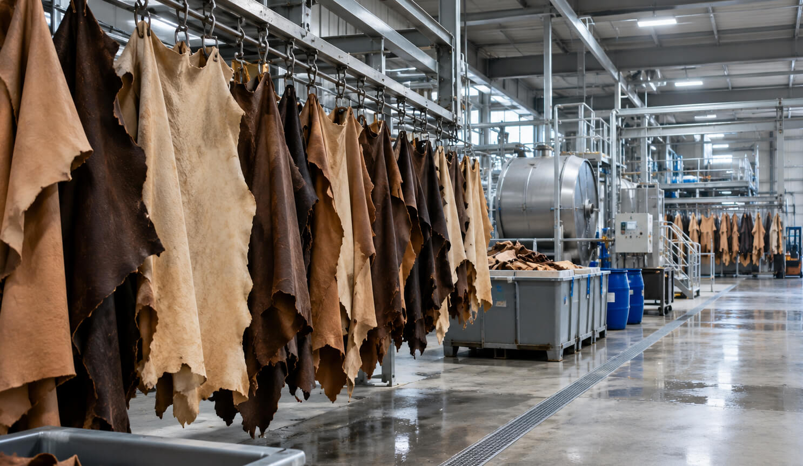

Vegetable-Tanned vs Chrome-Tanned Leather
If you've bought anything made of leather in the last ten years, a wallet, a bag, a pair of boots... then you've probably handled both of these materials without knowing which was which. They both start as animal hide. They both get sold as "leather." The process in between is completely different, as well as almost everything about how the finished material looks, feels, ages and affects the environment.
 Nenad Pantelic • October 16, 2026
Nenad Pantelic • October 16, 2026

Both methods solve the same problem
Tanning exists because raw hide rots. Leave it alone and the hide decomposes within days. Tanning changes the collagen structure of the hide so it stops rotting and stays flexible. People have been doing this since roughly 6,000 BCE, and for almost all of that time the method was vegetable tanning.
Chrome tanning only arrived in 1858, as a faster and cheaper alternative. Within about a century it had taken over. Chrome-tanned leather now accounts for roughly 90% of global leather production. Vegetable-tanned leather holds the remaining 10% or so.
Months against days
Vegetable tanning uses tannins pulled from plant matter, mostly bark but also leaves, roots and wood. The common sources are oak, chestnut, mimosa and quebracho. Hides soak in progressively stronger baths of these tannins, which displace the water bound inside the collagen fibres and stabilise them. The process is slow, and it runs 30 to 60 days depending on the leather and the tannery.
Chrome tanning uses chromium salts, specifically chromium(III) sulphate, after an acidic pre-treatment that opens the hide up so the chromium can penetrate. The hide is then brought back to a neutral pH. All of it can be mechanised, run in rotating drums, and finished in one to two days.
The economics are straightforward. Vegetable tanning ties up tank space for weeks, consumes water, burns through plant material and needs someone skilled watching it. Chrome tanning needs chemicals, equipment and about forty-eight hours. One is a craft discipline. The other is manufacturing.
How they feel and how they age
Hand someone a vegetable-tanned wallet and a chrome-tanned wallet and they can usually tell the difference without being told what to look for.
Vegetable-tanned leather is firm. It starts stiff, sometimes almost board-like, and softens with use. It feels dense in the hand and carries a woody smell from the plant tannins. The colour is never perfectly even: there are shade variations, visible grain and small marks, so each piece differs from the next. Then there is patina. Exposed to light, air and the oils from your hands, vegetable-tanned leather darkens and the surface deepens over months and years. An undyed veg-tan item will move from pale tan through deep caramel towards something close to oxblood over its life.
Chrome-tanned leather is soft from the first day. It tends to be thinner and more pliable, and consistent in colour across a batch, which is why it is the default for anything cut and sewn at scale, from car seats to leather jackets. It does not patina in the same way. It ages, scuffs and eventually wears out, but it stays close to how it looked when you bought it. It also handles water better out of the box. Vegetable-tanned leather can stain or warp if it gets soaked. Chrome-tanned leather is more forgiving.
Neither is better. They are built for different jobs.
Where you'll find each one
Chrome-tanned leather dominates fashion, upholstery, car interiors, gloves and garments, and most mass-market goods. Its softness, colour consistency and low cost per square foot make it the practical choice for anything produced in volume.
Vegetable-tanned leather lives in a smaller and more specific niche: belts, watch straps, holsters, bags, handmade wallets, bookbinding, and carved or tooled leatherwork. The firmness that makes veg-tan a poor choice for a soft jacket is what makes it right for a belt that has to hold its shape under tension.
The third category
Framing this battle as a binary is convenient but slightly inaccurate, because a lot of good leather is both. Combination tanning puts hides through a chrome tannage first, then retans them with vegetable tannins, which gives the maker the softness and stability of chrome with some of the character and depth of veg-tan.
The best-known example is Horween's Chromexcel. It gets a chrome base, then a heavy vegetable retannage with bark extracts, then hot stuffing, where oils, waxes and greases are worked into the hide in steamed mills. Horween puts the whole process at 89 separate steps over 28 working days. The result pulls and darkens when you bend it, takes a shine, and behaves far more like veg-tan than its chrome base would suggest.
So when a product description says "vegetable tanned," ask whether that means tanned with plant tannins from the start or chrome-tanned and retanned with them afterwards. Both are legitimate. They are not the same material, and the second one is far more common than the labelling tends to admit.
The chromium question
During my research I found that chrome tanning has something like a reputation problem. "Chrome" sounds artificial, and the leather industry's environmental record is genuinely mixed. The detail that usually gets lost is which chromium is involved.
Chrome tanning uses chromium(III), the trivalent form. It is a tanning agent and is not a known toxin. The dangerous form is chromium(VI), hexavalent chromium, which is carcinogenic and tightly regulated. Industry sources, including the fact-checking body Nothing to Hide, argue that in properly tanned leather the Cr(III) binds to the collagen and Cr(VI) stays well below the usual 3 ppm detection limit. Under normal conditions Cr(III) does not oxidise into Cr(VI) on its own.
The caveat is real, though. Cr(III) can convert into Cr(VI) if the leather meets the wrong combination of fatliquors, waxes, UV light or heat during or after tanning. Well-run tanneries manage that with scavengers and antioxidants. Badly run ones, and there have been plenty, especially where environmental enforcement is weak, can turn out leather with elevated Cr(VI), discharge chromium-laden wastewater and expose their workers to real risk.
Vegetable tanning sidesteps heavy metals altogether. It pays for that in water and raw material: the baths use far more water, and the tannins have to be grown and harvested somewhere. Veg-tan is generally more biodegradable at the end of its life. Chrome-tanned leather is harder to recycle, though some tanneries now recover chromium from their effluent and reuse it.
Calling one method clean and the other dirty gets the picture wrong. Both carry environmental costs.
So which should you buy?
The question has no general answer, because the two materials solve different problems.
Vegetable tanning is right when you want something that develops character, holds the shape and visibly records its own life and history, in a product meant to last a long time. The firmness, the patina, the smell and the slight unpredictability are the point.
Chrome tanning is right when you want soft, consistent leather with decent water resistance, in quantity, at a sensible price.
Both are legitimate ideas about what leather is for. And if a maker won't tell you which one they used, that only tells you something.